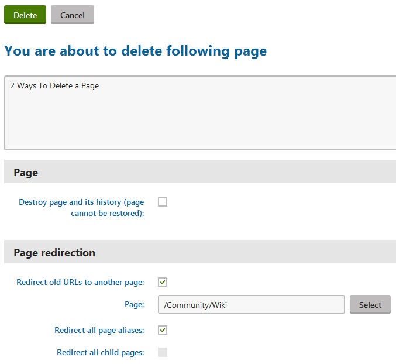
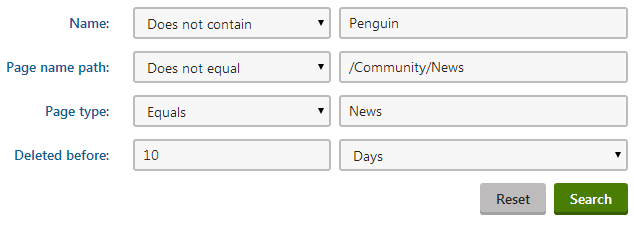
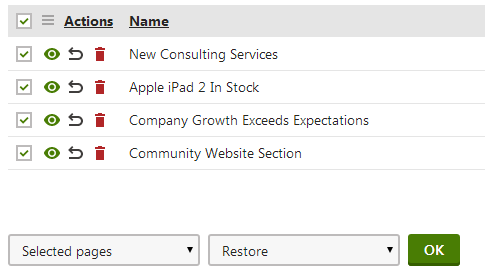
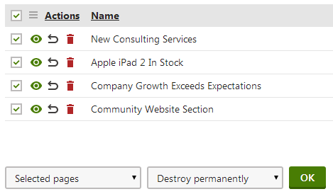

Deleting pages
In this topic you can learn about:
If you need to delete multiple pages at once, see Multiple page operations.
Deleting pages in the Pages application
Open the Pages application.
Click on the page or the page that you want to delete.
Click on Delete (
 ). A Delete page dialog opens.
). A Delete page dialog opens.Specify the deletion options:
Destroy page and its history (page cannot be restored) - select the check box if you want to make sure the page cannot be restored later.
Note that linked pages are never moved to the recycle bin and you cannot restore them once they are deleted.Redirect old URLs to another page - ensures that when users visit a link to the deleted page, the system redirects them to a different page instead.
Page - specify which page users see instead of the one you delete.
Redirect all page aliases - select the check box to make the website use the redirection page for all available URLs of the deleted page.
Redirect all child pages - select the check box to use the redirection page for all child page.

Confirm by clicking Yes.
The system deletes the page. If you specified that you don't want the system to destroy page and its history, you can restore the page at any time.
Deleting pages on the Live site
To be able to delete pages on the Live site, your administrator needs to enable On-site editing on the site.
Log on to the live site.
Click on the Edit page (
 ) button in the top left corner.
) button in the top left corner.Navigate to the page that you want to delete.
Click on Delete (
) on the top bar. A Delete page dialog appears.Specify the deletion options:
Destroy page and its history (page cannot be restored) - select the check box if you want to make sure the page cannot be restored later.
Note that linked pages are never moved to the recycle bin and you cannot restore them once they are deleted.Redirect old URLs to another page - ensures that when users visit a link to the deleted page, the system redirects them to a different page instead.
Page - specify which page users see instead of the one you delete.
Redirect all page aliases - select the check box to make the website use the redirection page for all available URLs of the deleted page.
Redirect all child pages - select the check box to use the redirection page for all child page.
Confirm by clicking Yes.
The system deletes the page. If you specified that you don't want the system to destroy page and its history, you can restore the page at any time.
Deleting multiple pages at once
If you need to delete multiple pages at once, see Multiple page operations.
Restoring deleted pages
You can restore pages (as well as objects) that you deleted. An exception are pages that were destroyed instead of just deleted.
To restore deleted pages:
Open the Recycle bin application on the Pages tab.
(Optional) Specify the pages that you want to restore using the filter above the list of deleted pages.
(Optional) Use the View button next to the pages in the Bin to view their details before restoring them.
Use the Restore
 button to undo the deletion of a page.
button to undo the deletion of a page.To restore multiple pages at once, turn the check boxes next to these pages on. Then use the drop-down list under the selected pages to specify the Restore
action and click on OK.
A dialog appears, confirm by clicking on OK.
The system restores the deleted pages back at their original location.
Emptying the page recycle bin
You can empty the page recycle bin to remove the deleted pages out of the system permanently.
To empty the page recycle bin:
Open the Recycle bin application on the Pages tab.
(Optional) If you want to delete specific pages only, use the filter above the list of deleted pages.
(Optional) Use the View button next to the pages in the Bin to view their details before removing them from the system permanently.
(Optional) Select the pages that you want to delete using the check-box next to the pages.
Use the drop-down list under the listed pages to specify whether you want to remove Selected pages or All pages.
Select the Destroy permanently option in the second drop-down list under the listed pages.
To remove a single pages from the system, use the Destroy permanently
 button next to a page.
button next to a page.
Click on OK.
The system removes the pages permanently.